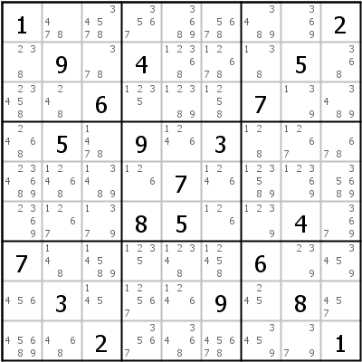

HoDoKu Lösungstechnik-Index: Beispiel für "Backdoors"

Originales Sudoku:
1.......2.9.4...5...6...7...5.9.3.......7.......85..4.7.....6...3...9.8...2.....1
Verwenden Sie die folgende Zeile um das Sudoku in HoDoKu zu laden:
:0000:x:1.......2.9.4...5...6...7...5.9.3.......7.......85..4.7.....6...3...9.8...2.....1:::
Die folgende Darstellung kann per Zwischenablage in die meisten Sudoku-Programme eingefügt werden:
.----------------------.---------------------.----------------------. | 1 478 34578 | 3567 3689 5678 | 3489 369 2 | | 238 9 378 | 4 12368 12678 | 138 5 368 | | 23458 248 6 | 1235 12389 1258 | 7 139 3489 | :----------------------+---------------------+----------------------: | 2468 5 1478 | 9 1246 3 | 128 1267 678 | | 234689 12468 13489 | 126 7 1246 | 123589 12369 35689 | | 2369 1267 1379 | 8 5 126 | 1239 4 3679 | :----------------------+---------------------+----------------------: | 7 148 14589 | 1235 12348 12458 | 6 239 3459 | | 456 3 145 | 12567 1246 9 | 245 8 457 | | 45689 468 2 | 3567 3468 45678 | 3459 379 1 | '----------------------'---------------------'----------------------'
Darstellung des Lösungsschrittes:
Copyright © 2008-12 von Bernhard Hobiger
Zuletzt geändert am 5. Mai 2025 von shorty#3746
(basierend auf dem 1to9only Github-Repo)
Alles Material auf dieser Site unterliegt der GNU FDLv1.3.